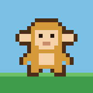

Slow connection, still loading…
Little Monkey
Arrow keys or WASD to move · Space or Enter for A · X for B (back) · M or Esc for the menu · T for your tasks · I for your bag · P for the map
Turn your phone sideways to play
On a computer, make the window wider.